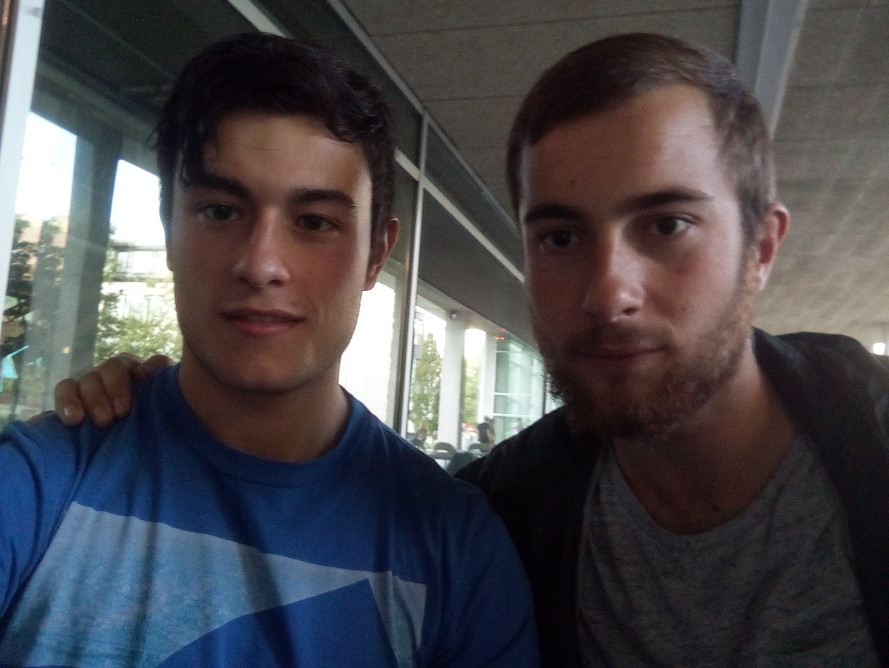

de Sistemas Web impartida en el tercer curso de Ingenieria del Software
en la UPV de San Sebastian. Iremos haciendo cambios semanales en la pagina
de manera que esperamos tenerla terminada para el 20 de Diciembre.
Os animamos a que jugueis un ratillo a Quiz. ¡UN SALUDO!
